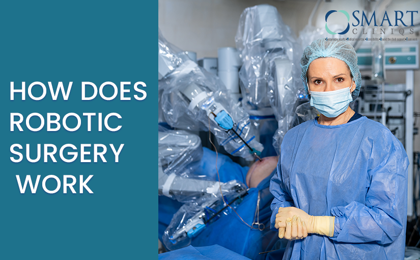

Robotic surgery has altered the landscape of surgery from gallbladder surgery to some of the world's most complicated surgeries. If this raising question of "Is robotic gallbladder surgery safe" has found a place in the minds of individuals across the globe, it is clear that this technology has been well accepted and almost signifies a patient revolution." In India, innovators like Dr. Atul Peters are taking one step ahead in refining surgical outcomes. This article is going to speak about the safety features of robotic surgery, its advantages, with some of the reasons why the majority of people are opting for robotic surgery.
Understanding the Basics of Robotic Surgery
Essentially, robot surgery is the application of an advanced robotic system that helps doctors carry out intricate procedures with unparalleled precision. Contrasting with conventional surgery, where a doctor uses only his hands, robotic surgery involves the application of diminutive, articulated instruments and a high-definition, 3D camera. With this, the surgeon can see the operative field in exquisite detail and move instruments with a level of accuracy that is hard to accomplish with traditional methods.
When you say, "How does robotic surgery work?", it starts with the patient being under general anesthesia. After the patient is asleep, the surgeon creates several small cuts rather than one big incision. Through these cuts, the robotic system's arms are inserted carefully. The surgeon then sits at a console, which operates these robotic arms, converting their hand movements into precise movements within the patient's body. Such configuration not only decreases trauma to adjacent tissues but also increases recovery duration and decreases pain after surgery.
The Technology Behind the Procedure
Robotic systems have sophisticated imaging capabilities that give the surgeon a magnified, 3D image of the operating area. This level of detail makes it easy for the surgeon to see and avoid important structures. The robotic arms are also designed to have more range of motion than the human hand, so they can move into tight or hard-to-reach spaces. This is especially useful in sensitive procedures where accuracy is critical.
Integrating robotics in surgery has transformed most procedures, ranging from urologic and gynecologic operations to intricate cardiac surgeries. In minimally invasive surgery, robotic technology has a lot of benefits, including smaller incisions, less blood loss, and faster recovery times. All these help make robotic surgery increasingly popular worldwide.
Benefits of Robotic Surgery
Most patients are curious, "Is robotic surgery good?" Yes, it is for many reasons:
- Precision and Control: The robotic platform offers greater dexterity and accuracy, enabling surgeons to conduct intricate procedures with little effect on the surrounding tissues.
- Minimally Invasive: With smaller cuts than open surgery, patients feel less postoperative discomfort, less scarring, and quicker recovery.
- Increased Visualization: Robotic systems utilizing high-definition 3D cameras provide the surgeon with an unparalleled level of vision over the area to be operated, which increases success.
- Shorter Hospital Stay: The minimally invasive technique of robotic surgery tends to cause patients to have a shorter hospital stay and regain everyday activities more quickly.
At Dr. Atul Peters' center, all these advantages are before our strategy of robotic surgery. Being one of the top specialists, Dr. Atul Peters is identified by most as the Best Robotic Surgeon in Delhi NCR because of his dedication to accuracy, patient treatment, and innovation.
Personalized Care at Dr. Atul Peters’ Facility
Each patient's surgery is different, and individualized care is important for the best results. Our clinic specializes in individualizing each procedure to match the unique needs of our patients. Through the initial consultation and postoperative follow-up, Dr. Atul Peters and his professional staff are in close contact with you to keep you informed about every step of the process.
If you wonder how robotic surgery works and wish to personally experience its advantages, our well-equipped center in Delhi provides the full spectrum of robotic surgical services. Dr. Atul Peters' skills combined with the best technology guarantee the best possible level of care for you.
Our patients are not only exposed to cutting-edge surgical procedures but also enjoy the warm support during their recuperation. This holistic touch has made Dr. Atul Peters one of the Best Robotic Surgeons in Delhi NCR, and most of our patients have witnessed better results, faster recovery, and a hassle-free transition to normal life.
The Future of Robotic Surgery
The future of robotic surgery is bright, with ongoing developments in technology advancing its capabilities even further. Researchers and clinicians are collaborating to develop robotic systems to be even more intuitive and powerful. This development will continue to broaden the spectrum of procedures that can be carried out robotically, providing patients with even more alternatives for minimally invasive surgery.
With the advancement of robotic surgery, the need for expert care and individualized attention is still of utmost importance. At Dr. Atul Peters' center, we remain at the cutting edge of these technologies to provide our patients with the most advanced and up-to-date surgical methods possible. If you are thinking about robotic surgery and would like to learn more about how robotic surgery works, we encourage you to make an appointment with us.
Conclusion
Robotic surgery is a revolutionary innovation in the medical world, providing unmatched precision, lower recovery periods, and better results. When you wonder, "How does robotic surgery work?", the reply is in its advanced technology and the skilled hands that operate it.
If you are considering surgery and are interested in the advantages of robotic surgery, contact us for a consultation. Our staff is committed to providing you with the best possible care in a caring, patient-focused setting. Join the future of surgery and take the first step towards a healthier, less invasive treatment experience today.
Back to Blog